Introduction to fastCNV - ST data
fastCNV_ST.RmdContext
fastCNV is a package to detect the putative Copy Number
Variations (CNVs) in single cell (scRNAseq) data or Spatial
Transcriptomics (ST) data. It also plots the computed CNVs.
In this vignette you will learn how to run this package on single ST seurat objects and on a list of ST Seurat objects. fastCNV runs on Seurat5.
Load packages
To get the example data used in this vignette, you’ll need to install
and load the fastCNVdata package.
remotes::install_github("must-bioinfo/fastCNV")
remotes::install_github("must-bioinfo/fastCNVdata")Load the example data
fastCNV package works both on scRNAseq data or ST data,
and we will demonstrate on ST data here, and there is another vignette
for scRNAseq data.
Here, we load STColon1, STColon2, STColon3 and STColon4 (spatial transcriptomics data from colorectal tumors, from Valdeolivas et al. work).
Check annotation
You can load a separate annotation file for your dataset if this
information is not available in the Seurat object. In this example, cell
type annotations are already present under the column
"annot" of the metadata.
# Import the annotation file corresponding to your sample. For 10X ST data you can annotate your spots with LoupeBrowser
annotation_file <- read.csv("/path/to/your/annotations/for/STColon1.csv")
STColon1[["annot"]] <- annotation_file$AnnotYou can take a look at which annotations are present in your objects, in order to select the labels of the cells that will be used as reference.
Run fastCNV
During this step, fastCNV() will use:
prepareCountsForCNVAnalysis: runs the Seurat standard clustering algorithm and then aggregates the observations (cells or spots) to into metaspots with up to the number of counts defined byaggregFactor(default 15,000). In addition, the observations can be aggregated on their seurat cluster AND their cell type combined by leaving defaultaggregateByVar = TRUEand specifying parameterreferenceVar. If the Seurat object has previously been clustered, the clustering will be re-done on sctransformed (SCT) data using 10 PCs with default parameters toFindNeighborsandFindClusters. This can be skipped by settingreClusterSeurat = FALSE.CNVAnalysis: computes the CNV. If you have annotations for your Seurat object, you can add the parametersreferenceVarandreferenceLabel.CNVPerChromosomeArm: to compute the CNV per chromosome arm, and store it in the metadata of the Seurat object. This part offastCNV()can be skipped by turninggetCNVPerChromosometoFALSE.CNVCluster: performs hierarchical clustering on a genomic score matrix extracted from a Seurat object.plotCNVResults: to visualize the results (stored in the assays slot of the Seurat object). By default, the parameterdownsizePlotis set toFALSE, which builds a detailed plot, but takes an important time to render. If desired, you can set the parameter toTRUE, which decreases the rendering time by plotting the results at the meta-cell level instead of the cell-level, thus decreasing the definition of the CNV results plotted.
This function will also build a PDF file for each sample containing their corresponding CNV heatmap in the current working directory, which can be changed using thesavePathparameter.
We are first going to run fastCNV() on our STColon1
object only, taking as reference the spots labeled
epithelium&submucosa, submucosa and
non neo epithelium since these are non-tumor spots.
STColon1 <- fastCNV(STColon1, sampleName = "STColon1", referenceVar = "annot",
referenceLabel = c("epithelium&submucosa","submucosa","non neo epithelium"),
printPlot = T)
#> Modularity Optimizer version 1.3.0 by Ludo Waltman and Nees Jan van Eck
#>
#> Number of nodes: 2052
#> Number of edges: 59198
#>
#> Running Louvain algorithm...
#> Maximum modularity in 10 random starts: 0.8424
#> Number of communities: 15
#> Elapsed time: 0 seconds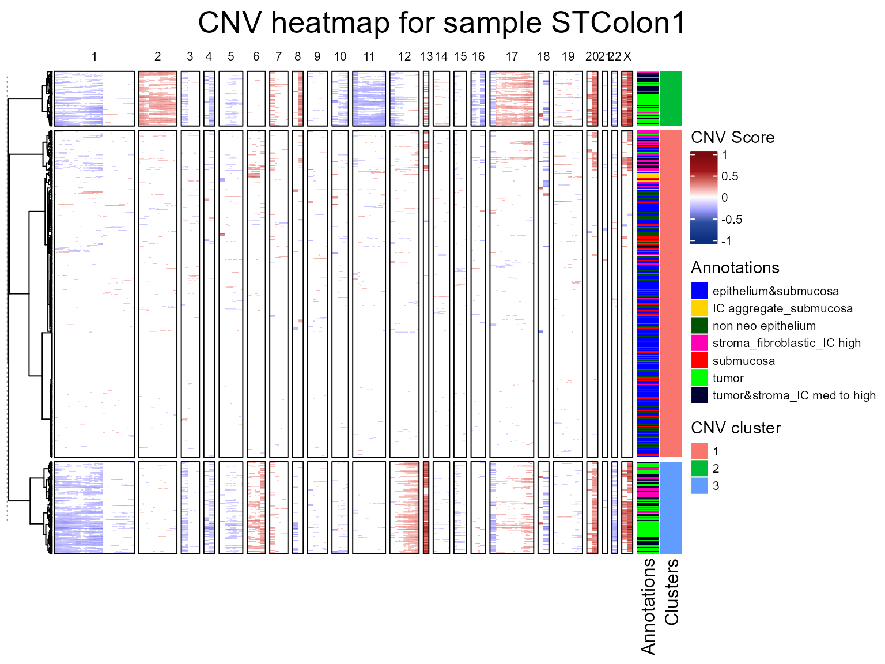
We are now going to run the fastCNV() function on a list
of Seurat objects. When fastCNV() is run on a list of
Seurat objects with the default parameters, it builds a pooled reference
between all the samples, which is particularly useful for ST data not
containing any healthy spots to build its own reference.
seuratList <- c(STColon2,STColon3,STColon4)
sampleNames <- c("STColon2", "STColon3", "STColon4")
names(seuratList) <- sampleNames
referencelabels <- c("epithelium&submucosa", "submucosa", "non neo epithelium",
"squamous epithelium", "epithelium&lam propria", "lamina propria")
seuratList <- fastCNV(seuratList, sampleNames, referenceVar = "annot",
referenceLabel = referencelabels, printPlot = T)
#> Modularity Optimizer version 1.3.0 by Ludo Waltman and Nees Jan van Eck
#>
#> Number of nodes: 2317
#> Number of edges: 63839
#>
#> Running Louvain algorithm...
#> Maximum modularity in 10 random starts: 0.8406
#> Number of communities: 15
#> Elapsed time: 0 seconds
#> Modularity Optimizer version 1.3.0 by Ludo Waltman and Nees Jan van Eck
#>
#> Number of nodes: 1574
#> Number of edges: 50141
#>
#> Running Louvain algorithm...
#> Maximum modularity in 10 random starts: 0.8186
#> Number of communities: 12
#> Elapsed time: 0 seconds
#> Modularity Optimizer version 1.3.0 by Ludo Waltman and Nees Jan van Eck
#>
#> Number of nodes: 1485
#> Number of edges: 42335
#>
#> Running Louvain algorithm...
#> Maximum modularity in 10 random starts: 0.8195
#> Number of communities: 12
#> Elapsed time: 0 seconds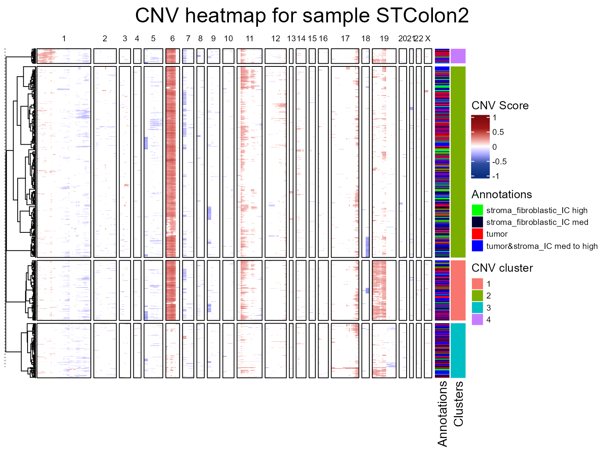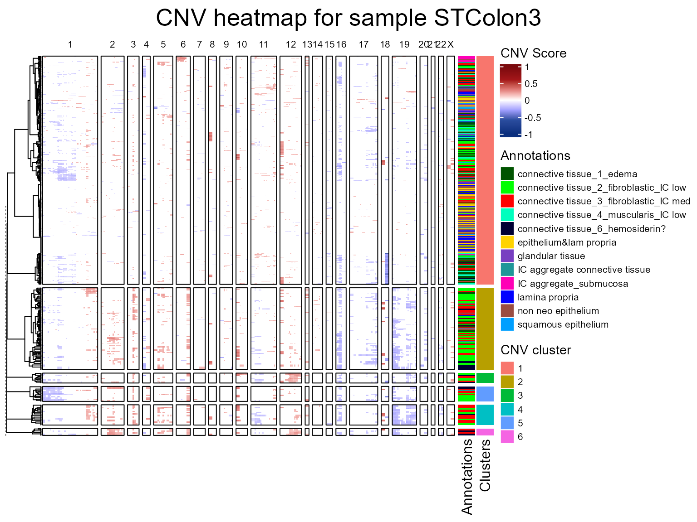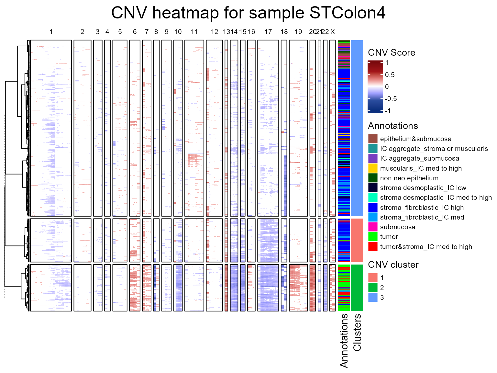
CNV fraction
fastCNV also computes a cnv_fraction for each
observation in the Seurat object. This can be directly plotted using
Seurat spatial plotting functions, as we’ll demonstrate on STColon1:
library(Seurat)
library(patchwork)
SpatialFeaturePlot(STColon1, "cnv_fraction", pt.size.factor = 3) | SpatialPlot(STColon1, group.by = "annot", pt.size.factor = 3)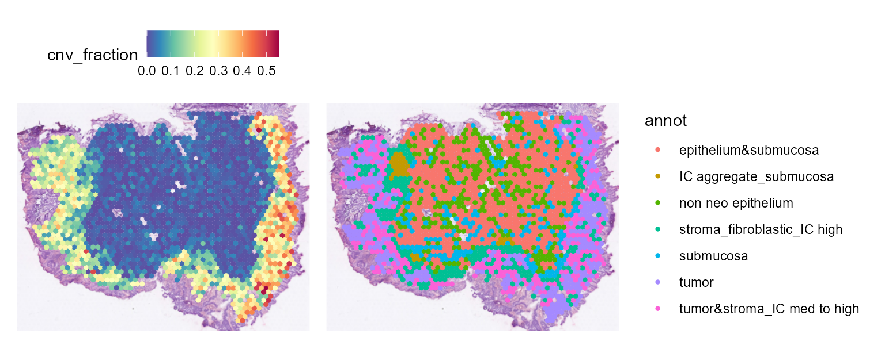
Here, we see some zones with much higher CNV fractions than others. We can directly plot and test this:
library(ggplot2)
ggplot(FetchData(STColon1, vars = c("annot", "cnv_fraction")),
aes(annot, cnv_fraction, fill = annot)) +
geom_boxplot() +
theme(axis.text.x = element_text(angle = 45, vjust = 1, hjust = 1, color = "black"))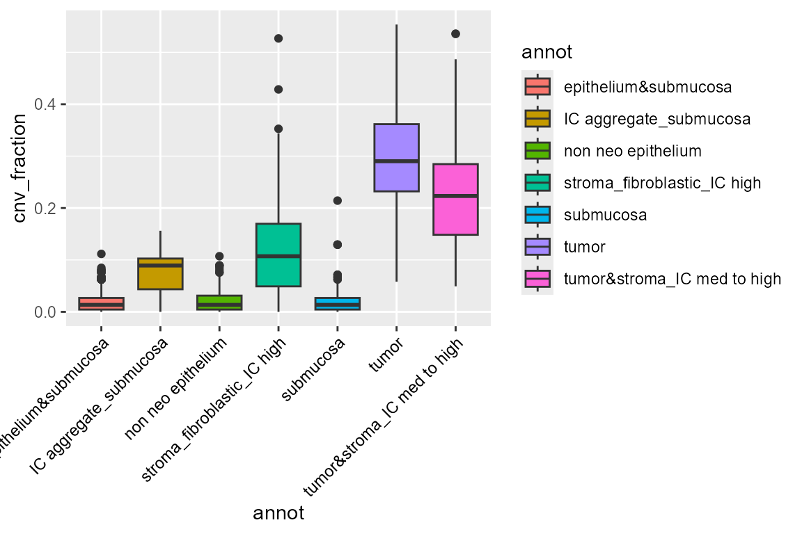
We can also plot the CNV per chromosome arm with the plotting functions from Seurat.
library(scales)
SpatialFeaturePlot(STColon1, features = "11.q_CNV", pt.size.factor = 3) +
scale_fill_distiller(palette = "RdBu", direction = -1, limits = c(-1, 1),
rescaler = function(x, to = c(0, 1), from = NULL) {
rescale_mid(x, to = to, mid = 0)
}) |
SpatialFeaturePlot(STColon1, features = "6.q_CNV", pt.size.factor = 3) +
scale_fill_distiller(palette = "RdBu", direction = -1, limits = c(-1, 1),
rescaler = function(x, to = c(0, 1), from = NULL) {
rescale_mid(x, to = to, mid = 0)
})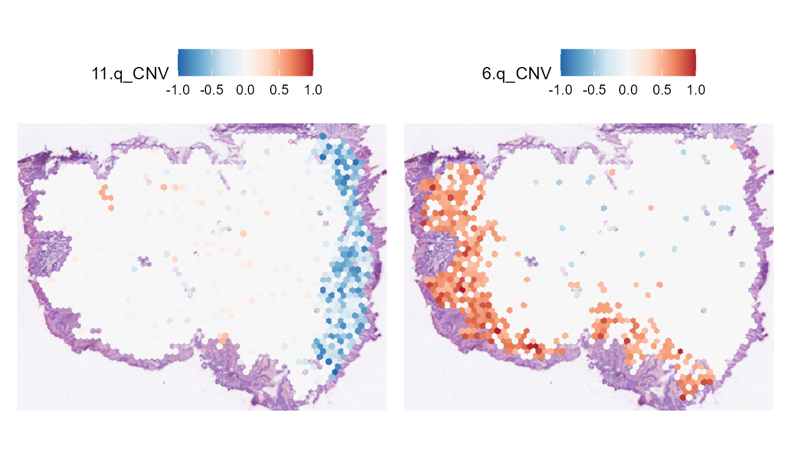
CNV classification
Using the CNV per chromosome arm and CNVclassification()
we can get the alterations per chromosome arm (gain, loss or no
alteration).
STColon1 <- CNVClassification(STColon1)
common_theme <- theme(
plot.title = element_text(size = 10),
legend.text = element_text(size = 8),
legend.title = element_text(size = 8),
axis.title = element_text(size = 8),
axis.text = element_text(size = 6)
)
SpatialDimPlot(STColon1, group.by = "11.p_CNV_classification") +
scale_fill_manual(values = c(gain = "red", no_alteration = "grey", loss = "blue")) +
common_theme | SpatialDimPlot(STColon1, group.by = "6.q_CNV_classification") +
scale_fill_manual(values = c(gain = "red", no_alteration = "grey", loss = "blue")) +
common_theme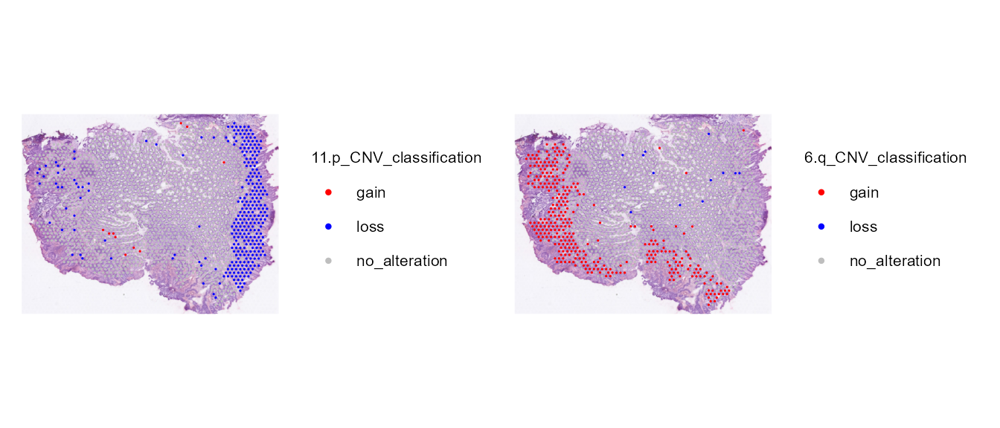
CNV clusters
In addition to the CNV fraction, fastCNV also computes the CNV clusters and saves them in the Seurat object metadata as “cnv_clusters”. These can be plotted with the Seurat plotting functions.
SpatialDimPlot(STColon1, group.by = "cnv_clusters", pt.size.factor = 3) 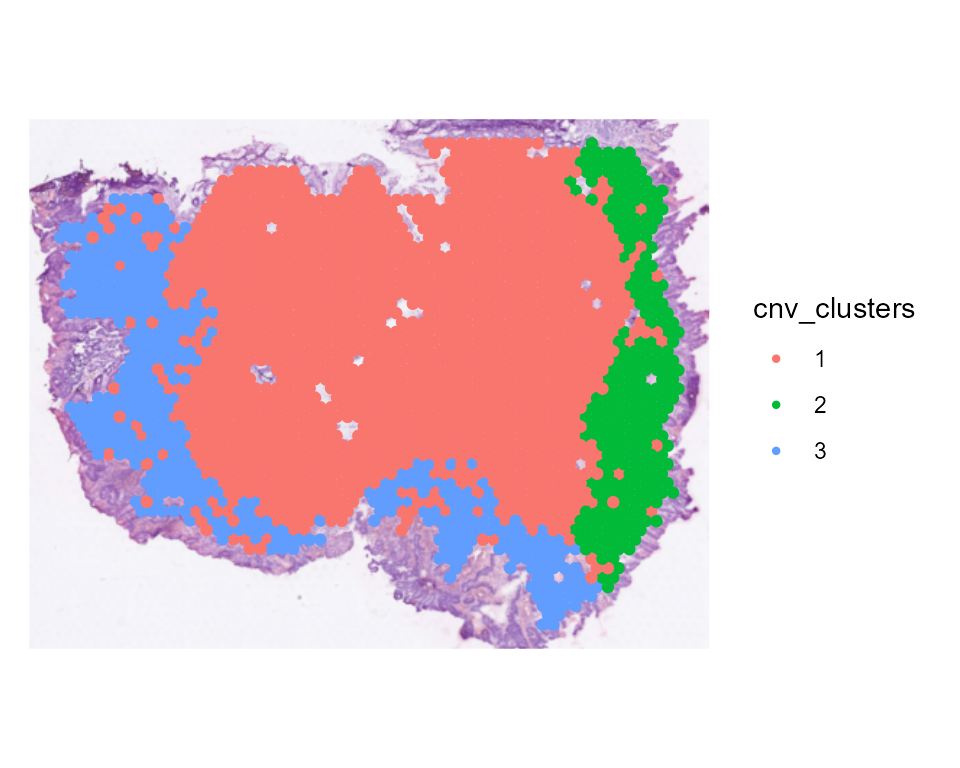
library(ggplot2)
library(SeuratObject)
ggplot(FetchData(STColon1, vars = c("cnv_clusters", "annot")), aes(annot, fill = as.factor(cnv_clusters))) +
geom_bar(position = "fill") +
theme(axis.text.x = element_text(angle = 45, vjust = 1, hjust = 1, color = "black"))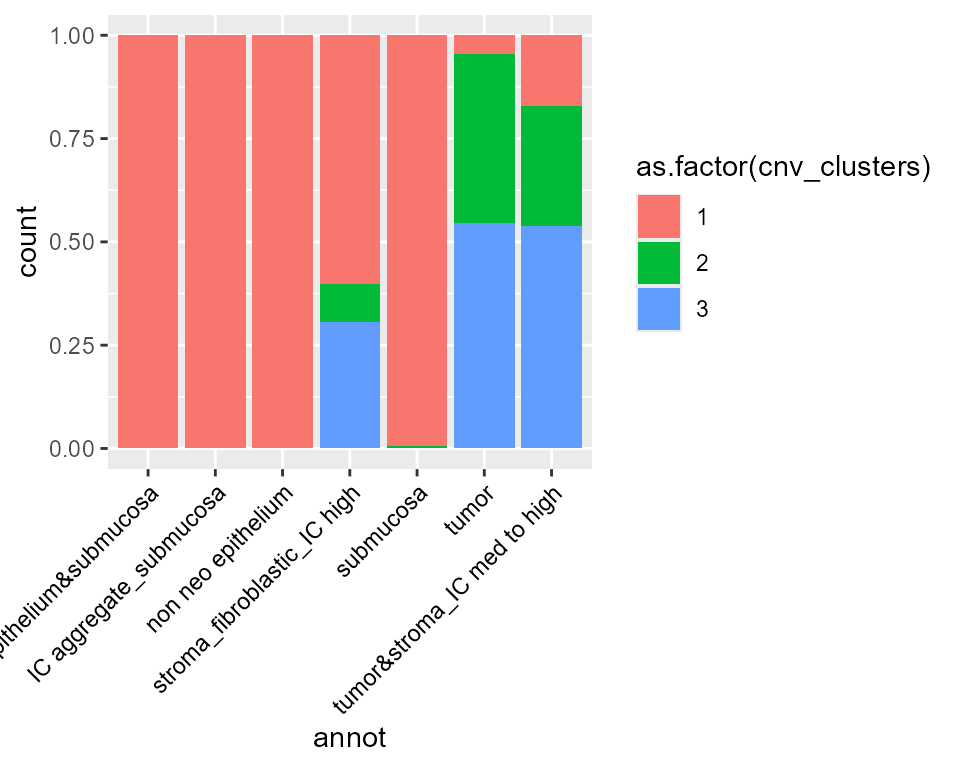
We find that tumor cells are virtually always cnv_cluster 2, 3, 4 or 5 ; meanwhile, healthy cells tend to be cnv_cluster 1 which present very few or no CNV.
CNV tree
We can see there are 2 tumor subclusters (2 and 3) in STColon1, and 1 healthy subcluster (1).
In this part of the vignette, we will show how to plot the CNV subclonality tree. CNV clusters are needed.
We build the tree, using CNVTree(). It contains the
following functions :
generateCNVClonesMatrixwill summarizefastCNV()’s results into a cluster/chromosome arm CNV matrix.buildCNVTree()will build the subclonality tree.annotateCNVTree()will annotate each cnv gain/loss in the tree.plotCNVTree()will output the tree.
tree_data <- CNVTree(STColon1, values = "calls", cnv_thresh = 0.09, healthyClusters = "1")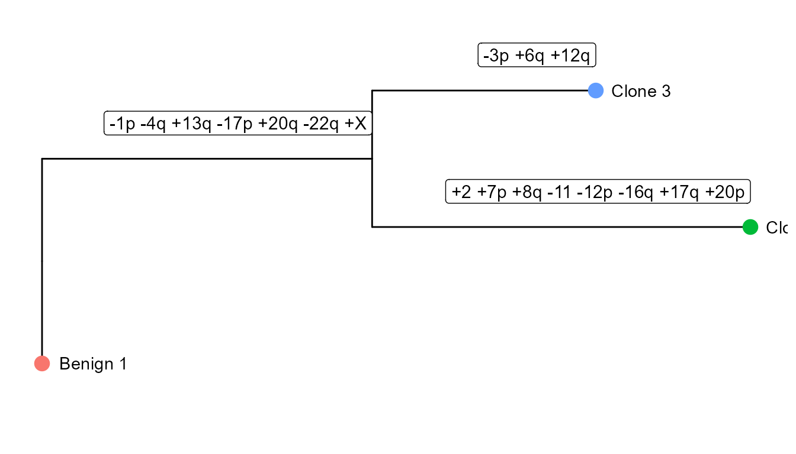